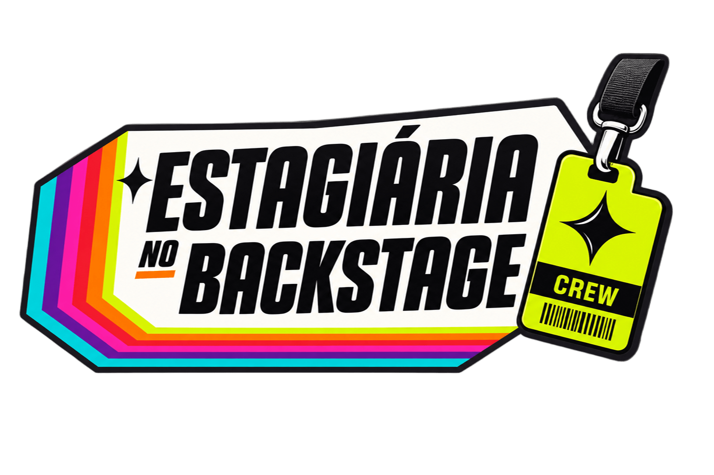

Backstage da Estagiária
Para além do que aparece na tela, o Backstage da Estagiária explora as relações entre cinema, sociedade e cultura. Um espaço para analisar narrativas, personagens e produções a partir de seus contextos históricos, políticos e sociais.
Explorar matérias ↓
O que existe além da tela
O Backstage da Estagiária reúne análises, críticas e reflexões sobre o cinema cult e suas relações com as ciências sociais. A coluna investiga como filmes, séries e outras produções audiovisuais representam questões de identidade, classe, gênero, comportamento e poder. A partir de diferentes perspectivas culturais e históricas, buscamos compreender não apenas o que essas obras contam, mas também os contextos em que foram produzidas, suas contradições e os debates que provocam.
Matérias do Backstage da Estagiária
Novas matérias em breve
Estamos preparando as próximas análises do Backstage da Estagiária. Enquanto isso, confira outras críticas, reportagens e publicações do Inferno Escarlate.
Ver todas as matérias →